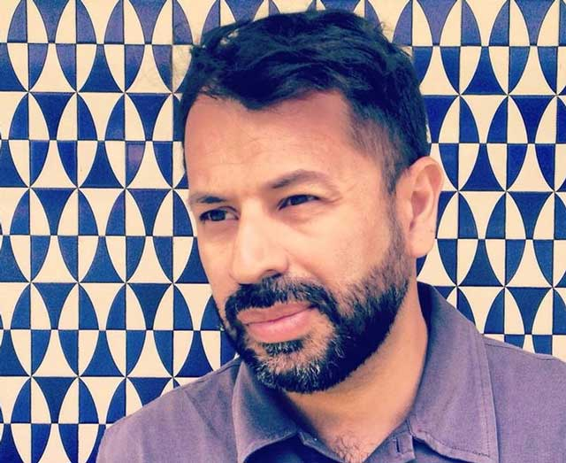

Mariano Giraud
Mariano Giraud (Buenos Aires, 1977) es Profesor Nacional de Bellas Artes con especialidad en Pintura por la Escuela Nacional de Bellas Artes Prilidiano Pueyrredón (I.U.N.A).
En el año 2000 funda junto con Mateo Amaral, Alfio Demestre, Maximiliano Bellman y Leandro Tartaglia el colectivo Oligatega Numeric.
Participa junto con el colectivo del Programa de Talleres para las Artes Visuales C.C.R.Rojas - UBA | Kuitca. Realiza clínica de obra con Diana Aisenberg, Rafael Cipollini, Eva Grinstein y Fabián Marcaccio y asiste a la Residencia Internacional de Artistas en Argentina (RIAA). Ha recibido diversas menciones entre las que se destacan el 2do premio Concurso Nacional UADE de Pintura (2013), 2do Premio Itaú Cultural de artes visuales (2011) y la participación en el Premio arteBA-Petrobras (2010).
Su obra ha sido exhibida en El Museo de Arte Moderno de Buenos Aires, Fondo Nacional de las Artes, Centro Cultural de la Memoria Haroldo Conti, Espacio Fundación Telefónica, Centro Cultural de España en Buenos Aires, Museo Nacional de Bellas Artes, MUSAC Museo de Arte Contemporáneo de Castilla y León, entre otros.
Por su relación cercana con la tecnología, en la actualidad se encuentra desarrollando esculturas y objetos con el procedimiento de esculpido digital e impresión 3D.